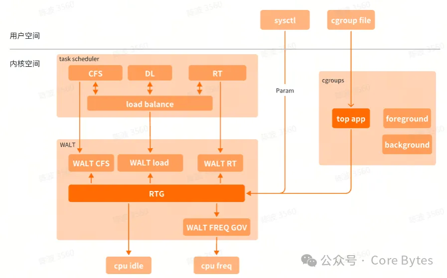
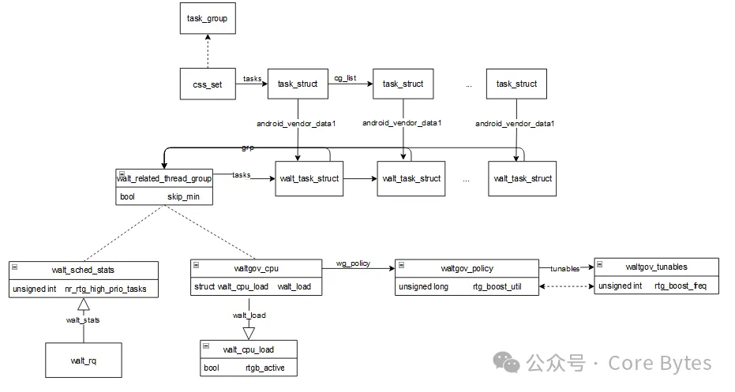

1. 引言
我们在《浅析高通 mvp 进程优先调度》一文中有提到 RTG 任务是 mvp 进程优先调度的其中一种任务类型，然而 RTG 的的影响范围不仅仅是进程优先调度。下面再带大家物格而后知至：再研读高通 WALT 调度器中的RTG。
RTG（Related Thread Group）是高通引入的一个特性，目的是将关联的进程加入到同一个group组中，用于提升性能。比如显示相关的主线程和render线程就可以加入到相同的RTG组中，根据实际需求，对其进行一些特殊处理。可以
将其调度到同一个CPU簇上，使得它们可以共享相同的cache资源，减少cache miss；也可以聚合RTG组里的任务负载，提升CPU的频率，达到性能提升的目的。RTG对于选核也会产生一定的影响。除此之外，在RTG的基础上引申出来很>多其它的特性，如优先调度等。本文在分析时难免出现错误和遗漏，欢迎批评指正。
2. RTG总体说明

RTG在内核中定义了一个独立的结构体，但是它在内核中并非以一个独立的模块存在，而是散落在WALT的各处代码中：
- 用户空间可以通过/proc文件节点将某个任务设置到RTG的不同组中
- 在将任务加到cgroup中时，会同时将任务添加到RTG中，默认”top-app” cgroup中的任务设置到默认RTG 组，其它任务通过sysctl设置到其它RTG组
- 在WALT FREQ GOV调频的过程中会参考CPU当前是否运行RTG任务，做出调频决策，如果是则会影响其调频行为；在某些场景下，CPU也会累加RTG任务的负载，起到聚合调频的作用
- 在WALT CFS和RT任务选核的过程中会参考CPU当前是否运行RTG任务，或要选核的任务是否位于RTG，做出选核决策，如果是则会影响其选核行为
3. RTG相关数据结构

- walt_related_thread_group
用于管理RTG任务，位于同一个RTG组的任务一般被调度到同一个CPU（cluste）运行，共享cache，提升性能。它维护了一个taks链表，RTG组内所有的任务将链接到此链表；RTG的skip_min显示他倾向的选核策略，如果为true，则选
择大核或超大核运行，略过小核; - walt_cpu_load
用于管理CPU负载，其中rtgb_active将影响CPU Busy的延迟时间（如进入lpm的时间），如果rtgb_active为true则会延长CPU某一个状态的时间，避免频繁进出状态引发抖动；rtgb_active也会影响调频，当rtgb_active为true时， 则会优先满足RTG组任务的util，从而影响了调频频率; - waltgov_cpu
用于管理CPU的WALT调频，它的walt_load中的rtgb_active会影响CPU的调频和CPU状态延迟时间; - waltgov_tunables
作为walt gov的旋钮，它确定了不同算力CPU的boost频率，记录在rtg_boost_freq里，rtg_boost_freq主要作为CPU调频时的参考，如对于RTG任务调频时，将参考这个值, 相当于会对频率做一些抬升; - waltgov_policy
用于管理cluster的walt调频，它的rtg_boost_util是参考waltgov_tunables的rtg_boost_freq得到的boot util，在调频时也会参考这个值; - walt_sched_stats
walt运行队列的统计数据，它的nr_rtg_high_prio_tasks代表队列中高优先级任务的个数。它对CPU状态延迟时间和选核都有影响，如果walt_nr_rtg_high_prio大于一定的阈值，则任务选核时将略过这个CPU，避免与RTG任务产生竞
争
4. RTG初始化
RTG相关的初始化是在WALT的初始化过程中完成的，主要通过walt_init和waltgov_init：
WALT初始化
WALT初始化主要调用walt_init，与RTG相关的初始化工作主要包含：
(1) walt_init会遍历所有的walt_task_group，对其进行初始化，其中对colocate的初始化会影响到RTG，可以看到只有”top-app” task_group的colocate置为true，colocate会影响cgroup任务的RTG分组;
(2) 注册了cpu cgroup attach的vendor hook回调。这个回调的主要功能是在任务加入到cgroup时，将任务也加入到RTG组中1
2
3
4
5
6
7//kernel/sched/walt/walt.c
static void walt_init(struct work_struct *work)
|- walt_init_tg_pointers();--------------------------（1）
| |_ css_for_each_child(css, top_css)
| walt_update_tg_pointer(css);
|_register_walt_hooks()-----------------------------（2）
|_ register_trace_android_rvh_cpu_cgroup_attach(android_rvh_cpu_cgroup_attach, NULL);
WALT governor初始化
WALT governor初始化主要通过waltgov_init对walt调频器进行初始化，这里仅列出与RTG相关的部分，它会根据CPU的类型，设定RTG boost频率；这个RTG boost频率将来对RTG任务的调频会产生影响，参考 RTG影响调频 一节。1
2
3
4
5
6
7
8
9
10
11//kernel/sched/walt/cpufreq_walt.c
static int waltgov_init(struct cpufreq_policy *policy)
|- struct waltgov_tunables *tunables;
|- tunables = kzalloc(sizeof(*tunables), GFP_KERNEL);
| ......
|_ if (is_min_possible_cluster_cpu(policy->cpu))
tunables->rtg_boost_freq = DEFAULT_SILVER_RTG_BOOST_FREQ;
else if (is_max_possible_cluster_cpu(policy->cpu))
tunables->rtg_boost_freq = DEFAULT_PRIME_RTG_BOOST_FREQ;
else
tunables->rtg_boost_freq = DEFAULT_GOLD_RTG_BOOST_FREQ;
对于不同类型的CPU簇，定义了不同的RTG boost频率阈值如下，可以看到不同算力的cluster，它的boost频率定义也不一样：1
2
3
4//kernel/sched/walt/cpufreq_walt.c
#define DEFAULT_SILVER_RTG_BOOST_FREQ 1000000
#define DEFAULT_GOLD_RTG_BOOST_FREQ 768000
#define DEFAULT_PRIME_RTG_BOOST_FREQ 0
5. 将任务加入RTG组
有两种方法可以将任务设置到RTG组：通过sysctl进行设置；通过cgroup进行设置。
通过sysctl设置进程到RTG组
通过sysctl可以将一个WALT任务添加到RTG组中，操作方法举例如下，其中pidxx为任务的pid：1
2# echo pidxx > /proc/sys/walt/sched_task_read_pid
# echo pidxx group_idxx > /proc/sys/walt/sched_group_id
通过cgroup设置进程到RTG组
前面介绍WAL初始化时，提到会注册cpu cgroup attach的vendor hook回调，任务在加入到某个cgroup中时，会触发执行android_rvh_cpu_cgroup_attach，它会遍历cgroup task group里的任务，将其加入到RTG组中。如walt_task_group的colocate为真则加入到RTG 默认组（ID为DEFAULT_CGROUP_COLOC_ID）；否则不允许加入到RTG组。在前面walt_init中可以看到只有”top-app” task group中的任务才可以加入到默认RTG默认组，这也预示着默认情况下，只>有“top-app” task group组的任务享有RTG的的”待遇“，如调频/选核等。1
2
3
4
5
6
7
8
9
10//kernel/sched/walt/walt.c
static void android_rvh_cpu_cgroup_attach(void *unused,
| struct cgroup_taskset *tset)
|- struct task_group *tg;
|- cgroup_taskset_first(tset, &css);
|- tg = container_of(css, struct task_group, css);
|- wtg = (struct walt_task_group *) tg->android_vendor_data1;
|_ cgroup_taskset_for_each(task, css, tset)
grp_id = wtg->colocate ? DEFAULT_CGROUP_COLOC_ID : 0;
__sched_set_group_id(task, grp_id);
6. RTG 的 CFS 选核
RTG影响选核主要发生在唤醒一个进程时。选核的主要原则是：如果被唤醒的是RTG组的任务，则它会倾向于选择算力充足的cluster；如果被唤醒的是其它任务，则它倾向于与RTG组的任务分开，不运行在同一个CPU上。
(1) 通过set_preferred_cluster来选择一个倾向的cluster，这个过程会受RTG组任务的影响；
(2) 通过walt_select_task_rq_fair选择一个 cpu来运行1
2
3
4
5
6
7
8
9
10
11
12
13//kernel/sched/core.c
static int
try_to_wake_up(struct task_struct *p, unsigned int state,
| int wake_flags)
| |_ android_rvh_try_to_wake_up(unused, p)
| |_ if (update_preferred_cluster(grp, p, old_load, false))
| set_preferred_cluster(grp);---------------------(1)
| |_ _set_preferred_cluster(grp)
|- cpu = select_task_rq(p, p->wake_cpu, wake_flags | WF_TTWU)
| |_ select_task_rq_fair(p, cpu, wake_flags)
| |_ walt_select_task_rq_fair(void *unused,
| p, prev_cpu, sd_flag, wake_flags, target_cpu)----(2)
|_ ttwu_queue(p, cpu, wake_flags)
set_preferred_cluster
对于RTG任务，在选核时会选取满足RTG算力的最佳的cluster，保存在walt_related_thread_group的preferred_cluster:
(1) 循环遍历RTG组里所有的任务，如果任务p的boost policy为SCHED_BOOST_ON_BIG，表示需要至少在大核上面运行，为后续选核遍历做index指导；否则累加RTG组所有任务的负载，以此作为选核的依据，将来也会用来做聚合调频>；如果运行时间太短，则任务是一个新任务，退出不做选核操作；
(2) update_best_cluster根据combined_demand来更新cluster，主要是更新walt_related_thread_group的skip_min, 它决定了更倾向于哪个cluster，如果为true则倾向于大核1
2
3
4
5
6
7
8
9
10
11
12
13
14
15
16
17
18
19
20//kernel/sched/walt/walt.c
static void _set_preferred_cluster(struct walt_related_thread_group *grp)
|- u64 combined_demand = 0;
| bool group_boost = false
|- list_for_each_entry(wts, &grp->tasks, grp_list)---------------(1)
| p = wts_to_ts(wts);
| if (task_boost_policy(p) == SCHED_BOOST_ON_BIG)
| group_boost = true;
| break;
|
| if (wts->mark_start < wallclock -
| (sched_ravg_window * RAVG_HIST_SIZE))
| continue;
|
| combined_demand += wts->coloc_demand;
| if (!trace_sched_set_preferred_cluster_enabled())
| if (combined_demand > sched_group_upmigrate)
| break;
|- grp->last_update = wallclock;
|_ update_best_cluster(grp, combined_demand, group_boost);-------(2)
walt_select_task_rq_fair
walt_select_task_rq_fair为任务选取一个合适的运行队列，这里特别说明下sync标志，在Linux内核调度器中，WF_SYNC标志用于表示同步唤醒（sync wakeup）。同步唤醒是指在唤醒操作后，唤醒者（waker）即将进入睡眠状态的>场景。具体来说，当一个任务（waker）唤醒另一个任务（wakee）后，如果WF_SYNC标志被设置，这意味着waker很快会进入阻塞状态，因此调度器会倾向于将wakee放置在waker当前运行的CPU上，以减少上下文切换和提高效率，因此
处于性能考虑，如果当前任务和唤醒的任务都是RTG任务，则避免将其调度到同个CPU上：
(1) walt_get_indicies会确定一个选核的范围，对于RTG任务，选核会从cluster1开始，而非从cluster0开始；
(2) 如果任务p和当前运行的是都是RTG任务，那么尽量避免将任务p调度到与当前任务相同的CPU上；
(3) walt_find_best_target选择最佳的cpu，在选择CPU时，尽量分散高优先级的RTG任务，以避免它们相互抢占，同时优先选择剩余容量最大的CPU。这是一种优化策略，旨在提高系统的性能和响应速度。1
2
3
4
5
6
7
8
9
10
11
12
13//kernel/sched/walt/walt_cfs.c
walt_select_task_rq_fair(void *unused, p, prev_cpu, sd_flag, wake_flags, target_cpu)
|- int sync;
| sync = (wake_flags & WF_SYNC) && !(current->flags & PF_EXITING);
|_ *target_cpu=walt_find_energy_efficient_cpu(p, prev_cpu, sync, sibling_count_hint)
|- walt_get_indicies(p, &order_index, &end_index, task_boost, uclamp_boost,
| &energy_eval_needed);------------------------(1)
| |_ walt_task_skip_min_cpu(p)
|- is_rtg = task_in_related_thread_group(p);
|- curr_is_rtg = task_in_related_thread_group(cpu_rq(cpu)->curr)
|- if (sync && (need_idle || (is_rtg && curr_is_rtg)))
| sync = 0;-----------------------------------------------------------(2)
|_ walt_find_best_target(NULL, candidates, p, &fbt_env)-----------------（3）
walt_find_best_target的实现如下，在选择CPU时，尽量分散高优先级的RTG任务，以避免它们相互抢占，同时优先选择剩余容量最大的CPU。这是一种优化策略，旨在提高系统的性能和响应速度。1
2
3
4
5
6
7
8
9
10
11
12
13
14
15
16
17
18
19
20
21
22
23//kernel/sched/walt/walt_cfs.c
static void walt_find_best_target(struct sched_domain *sd,
cpumask_t *candidates,
struct task_struct *p,
struct find_best_target_env *fbt_env)
|- unsigned int target_nr_rtg_high_prio = UINT_MAX;
| bool rtg_high_prio_task = task_rtg_high_prio(p);
|_ for_each_cpu(i, &visit_cpus)
if (rtg_high_prio_task) {
if (walt_nr_rtg_high_prio(i) > target_nr_rtg_high_prio)
continue;
/* Favor CPUs with maximum spare capacity */
if (walt_nr_rtg_high_prio(i) == target_nr_rtg_high_prio &&
spare_cap < target_max_spare_cap)
continue;
} else {
/* Favor CPUs with maximum spare capacity */
if (spare_cap < target_max_spare_cap)
continue;
}
target_max_spare_cap = spare_cap;
target_nr_rtg_high_prio = walt_nr_rtg_high_prio(i);
target_cpu_cluster = i;
7. RTG 的 RT 选核
walt_select_task_rq_rt在为rt任务选核过程中，会对当前CPU的状态进行判断，如果CPU当前运行的任务属于低延迟任务（如RTG任务）或RTG高优先级任务（RT任务且位于RTG）数不为0，则不会将RT任务调度到此cpu core上, 以避>免与RTG任务争夺资源。1
2
3
4
5
6
7
8
9
10//kernel/sched/walt/walt_rt.c
static void walt_select_task_rq_rt(void *unused, struct task_struct *task, int cpu,
int sd_flag, int wake_flags, int *new_cpu)
|_ walt_rt_energy_aware_wake_cpu(task, &lowest_mask_reduced, ret, &target)
|_ for (cluster = 0; cluster < num_sched_clusters; cluster++)
for_each_cpu_and(cpu, lowest_mask, &cpu_array[order_index][cluster])
|- lt = (walt_low_latency_task(cpu_rq(cpu)->curr) ||
| walt_nr_rtg_high_prio(cpu));
|_ if (lt && !best_cpu_lt)
continue;
8. RTG 的负载均衡选核
负载均衡指的是让CPU获得与其算力匹配的负载，广义的负载均衡包含：负载均衡（load balance）、任务放置（task placement）、主动均衡（active upmigration）。前面简要介绍过RTG对任务放置的影响，下面主要介绍RTG对负
载均衡（load balance）的影响，这里仅考虑CFS任务。
那么触发负载均衡（load balance）的时机有哪些呢？概括的讲，主要包含有两种情况：
(1)当系统tick事件发生时会通过软中断触发负载均衡（load balance）
periodic balance，找到调度域中负载最重的调度组，将其上的runnable任务拉到本CPU以便让该调度域上各个调度组的负载处于均衡的状态，让 busy cpu 之间负载均衡。
nohz idle load banlance，本CPU任务太重，其他任务处于 idle，需要通过ipi将idle的cpu唤醒来进行负载均衡。
(2)当scheduler选取下一个任务时，如果rq没有可运行的任务，此时只能执行idle线程，就会通过newidle_balance来触发new idle load balance。1
2
3
4
5
6
7
8
9//kernel/sched/fair.c
static int load_balance(int this_cpu, struct rq *this_rq,------------------------（1）
struct sched_domain *sd, enum cpu_idle_type idle,
int *continue_balancing)
|_ detach_tasks(&env)
|_ can_migrate_task(p, env)
|_ trace_android_rvh_can_migrate_task(p, env->dst_cpu, &can_migrate)
|_ walt_can_migrate_task(void *unused, p, env->dst_cpu, can_migrate)
|_ _walt_can_migrate_task(p, dst_cpu, to_lower, to_higher, true)1
2
3
4
5
6
7
8
9
10
11
12
13
14//kernel/sched/core.c
static void __sched notrace __schedule(unsigned int sched_mode)-----------------（2）
|_ pick_next_task(rq, prev, &rf)
|_ put_prev_task_balance(rq, prev, rf)
|_ for_class_range(class, prev->sched_class, &idle_sched_class)
class->balance(rq, prev, rf)
balance_fair(rq, struct prev, rf)
|_ newidle_balance(rq, rf)
|_ trace_android_rvh_sched_newidle_balance(this_rq, rf, &pulled_task, &done);
|_ walt_newidle_balance(this_rq, rf, pulled_task, done, false)
|_ walt_lb_pull_tasks(this_cpu, busy_cpu, pulled_task_struct);
|_ list_for_each_entry_reverse(p, &src_rq->cfs_tasks, se.group_node)
if (!_walt_can_migrate_task(p, dst_cpu, to_lower, to_higher, false))
continue;
如上两种触发负载均衡（load balance)的场景都会调用_walt_can_migrate_task，它是用来判断任务p是否可以迁移的函数，walt_get_rtg_status返回的就是任务p所在RTG的skip_min状态，这里仅列出与RTG相关的内容：
如果没有强制要求迁移到某个核的前提下，对于RTG组的任务会做一些判断，如果任务要求运行在大核上（walt_related_thread_group的skip_min为true），则任务不能迁移到算力比当前CPU低的CPU上。1
2
3
4
5
6
7
8//kernel/sched/walt/walt_lb.c
static inline bool _walt_can_migrate_task(struct task_struct *p, int dst_cpu,
bool to_lower, bool to_higher, bool force)
|- struct walt_rq *wrq = &per_cpu(walt_rq, task_cpu(p));
| struct walt_task_struct *wts = (struct walt_task_struct *) p->android_vendor_data1;
|_ if (to_lower)
if (!force && walt_get_rtg_status(p))
return false;
9. RTG 的调频策略
walt负载跟踪中，对RTG组任务的util是单独统计的，RTG组的util可以影响到CPU的调频，主要表现在：
(1) 某些场景下(如点击或滑动)，RTG组任务的util会累加到当前CPU的util上，起到聚合调频的作用，从而拉高了频率;
(2) RTG任务自身运行时，影响调频。初始化时waltgov_init会根据CPU簇的算力，设定CPU簇的boost频率，这个boost频率又可以根据CPU算力转换为util，这个util是比实际util大的，如果此时有RTG任务在运行时，util就就会
影响到cpu的调频，保证cpu不低于某个频率。这里影响到的RTG任务主要是”top-app” cgroup任务，因为其它的task group任务不会自动加入到RTG组中，除非手动加入。
具体分析如下：
(1) waltgov_get_util获取cpu的util，这个util将用于估算所需要的频率。freq_policy_load在某些场景（如滑动或点击）会将CPU当前的util和RTG组任务的util进行累加，作为后续选频的依据，这也就是所谓的”RTG聚合调频”;__cpu_util_freq_walt也会初始化walt_load->rtgb_active，它来源于rtgb_active，rtgb_active在walt_irq_work设置，后面可以看到walt_load->rtgb_active会最终影响到util的计算，如果为true会在wg_policy->rtg_boost_uti与计算的util之间选取最大值;
(2) 以wg_policy->tunables->rtg_boost_freq为目标频率，得到rtg_boost_util，保存在wg_policy->rtg_boost_util，rtg_boost_freq是在waltgov_init时根据不同的簇进行初始化；
(3) walt_load->rtgb_active如果为true则会选取当前util和wg_policy->rtg_boost_util的最大值作为util；
(4) 根据util值得到下一个候选频率
(5) 执行调频1
2
3
4
5
6
7
8
9
10
11
12
13
14
15
16
17
18
19
20
21
22
23
24
25
26
27//kernel/sched/walt/cpufreq_walt.c
static void waltgov_update_freq(struct waltgov_callback *cb, u64 time,
unsigned int flags)
|- struct waltgov_cpu *wg_cpu = container_of(cb, struct waltgov_cpu, cb);
| unsigned long hs_util, rtg_boost_util
|- wg_cpu->util = waltgov_get_util(wg_cpu);--------------------------------(1)
| |_ cpu_util_freq_walt(wg_cpu->cpu, &wg_cpu->walt_load, &wg_cpu->reasons)
| |_ __cpu_util_freq_walt(cpu, walt_load, reason)
| | //某些场景下会聚合RTG的负载
| |- scale_time_to_util(freq_policy_load(rq, reason));
| | //ed_task为true,表示任务唤醒前经过较长时间的睡眠，应该被“关照”
| |_ if (walt_load && wrq->ed_task)
| walt_load->rtgb_active = rtgb_active
|- if (wg_policy->max != wg_cpu->max)--------------------------------------（2）
| rtg_boost_util = target_util(wg_policy,//根据频率获取到目标util
| wg_policy->tunables->rtg_boost_freq);
| wg_policy->rtg_boost_util = rtg_boost_util;//这个目标util用于选频
|- next_f = waltgov_next_freq_shared(wg_cpu, time);
| |- for_each_cpu(j, policy->cpus)
| | waltgov_walt_adjust(j_wg_cpu, j_util, j_nl, &util, &max);--------（3）
| | |- bool is_rtg_boost = wg_cpu->walt_load.rtgb_active;
| | |_if (is_rtg_boost && (!cpumask_test_cpu(wg_cpu->cpu,
| | cpu_partial_halt_mask) || !is_state1()))
| | max_and_reason(util, wg_policy->rtg_boost_util, wg_cpu,
| | CPUFREQ_REASON_RTG_BOOST);
| |_return get_next_freq(wg_policy, util, max, wg_cpu, time)-------------（4）
|_ waltgov_fast_switch(wg_policy, time, next_f)---------------------------（5）
那么RTG任务的聚合发生在什么地方呢？如上rtgb_active又是在何时初始化的呢？主要在walt_irq_work中完成：1
2
3
4
5
6
7
8
9
10
11
12
13
14
15
16
17
18
19
20
21
22
23
24
25
26
27//kernel/sched/walt/walt.c
static void waltgov_update_freq(struct waltgov_callback *cb, u64 time,
unsigned int flags)
|- struct waltgov_cpu *wg_cpu = container_of(cb, struct waltgov_cpu, cb);
| unsigned long hs_util, rtg_boost_util
|- wg_cpu->util = waltgov_get_util(wg_cpu);--------------------------------(1)
| |_ cpu_util_freq_walt(wg_cpu->cpu, &wg_cpu->walt_load, &wg_cpu->reasons)
| |_ __cpu_util_freq_walt(cpu, walt_load, reason)
| | //某些场景下会聚合RTG的负载
| |- scale_time_to_util(freq_policy_load(rq, reason));
| | //ed_task为true,表示任务唤醒前经过较长时间的睡眠，应该被“关照”
| |_ if (walt_load && wrq->ed_task)
| walt_load->rtgb_active = rtgb_active
|- if (wg_policy->max != wg_cpu->max)--------------------------------------（2）
| rtg_boost_util = target_util(wg_policy,//根据频率获取到目标util
| wg_policy->tunables->rtg_boost_freq);
| wg_policy->rtg_boost_util = rtg_boost_util;//这个目标util用于选频
|- next_f = waltgov_next_freq_shared(wg_cpu, time);
| |- for_each_cpu(j, policy->cpus)
| | waltgov_walt_adjust(j_wg_cpu, j_util, j_nl, &util, &max);--------（3）
| | |- bool is_rtg_boost = wg_cpu->walt_load.rtgb_active;
| | |_if (is_rtg_boost && (!cpumask_test_cpu(wg_cpu->cpu,
| | cpu_partial_halt_mask) || !is_state1()))
| | max_and_reason(util, wg_policy->rtg_boost_util, wg_cpu,
| | CPUFREQ_REASON_RTG_BOOST);
| |_return get_next_freq(wg_policy, util, max, wg_cpu, time)-------------（4）
|_ waltgov_fast_switch(wg_policy, time, next_f)---------------------------（5）
那么RTG任务的聚合发生在什么地方呢？如上rtgb_active又是在何时初始化的呢？主要在walt_irq_work中完成：1
2
3
4
5
6
7
8
9
10
11
12
13
14
15
16//kernel/sched/walt/walt.c
static void walt_irq_work(struct irq_work *irq_work)
|- __walt_irq_work_locked(is_migration, is_asym_migration,
|_ is_shared_rail_migration, &lock_cpus);
|- u64 total_grp_load = 0;
|- for_each_sched_cluster(cluster)
| u64 aggr_grp_load = 0;
| for_each_cpu(cpu, &cluster->cpus)
| /* update aggr_grp_load for all clusters, all cpus */
| aggr_grp_load += wrq->grp_time.prev_runnable_sum;
| cluster->aggr_grp_load = aggr_grp_load;
| total_grp_load += aggr_grp_load
|_ if (total_grp_load)
rtgb_active = is_rtgb_active();
else
rtgb_active = false;
__walt_irq_work_locked中会遍历每个簇中的cpu，将每个cpu上的RTG任务负载累加到簇的aggr_grp_load中，这个累加值就会在某些场景下（滑动或点击）用于CPU的聚合调频。
如上对于聚合调频影响路径可以概括为：
- 初始化时设定walt_task_group的colocate标记，如果设为true，则task group中的任务会被加入到RTG默认组;
- RTG组任务的util是被单独统计的，在walt负载跟踪时会更新，在walt_irq_work会累加cpu簇的每个cpu上运行的RTG任务的util，保存在簇的aggr_grp_load中;
- 在某些sched_boost场景下（如滑动或点击），会将cpu当前util与RTG组的util即簇的aggr_grp_load累加，做聚合调频
10. RTG 推迟 cpu 进入 idle
RTG会影响CPU busy的延迟时间，一个典型的例子是CPU进入LPM(Low Power Mode)模式的时间。我们知道当CPU处于空闲状态时，它会执行Idle Task。Idle Task是内核中的一个特殊线程，负责在CPU没有任务执行时管理CPU的电源状>态。Idle Task通过cpuidle_select函数，根据CPU idle governor的策略选择一个合适的LPM模式，并进入到这个模式。当有任务需要执行或者中断发生时，CPU会从LPM模式中退出，恢复到正常工作状态。
LPM有多个模式，分为C状态和D状态，其中C状态又分为C0,C1,C4,D状态又分为D0，D1，D4，进出不同的LPM模式，花费的时间是不同的，层级越高花费的时间越多；同时，不同层级引发的功耗也不同。因此系统在保持一定负载量的情
况下，CPU在idle间隙，如果频繁进出LPM模式，将会导致性能下降，也会引起一定的功耗。相比来说，此时保持LPM模式浅休眠一定时间，降低进出LPM模式的频率，反而可以避免性能下降，也可减少功耗。在这种背景下，针对RTG任
务，设置了CPU busy的延迟时间，避免频繁进出 LPM 状态，减少功耗增加，并且可能避免性能 2ms 的响应延时。如下将分别说明延迟时间的更新方式、更新时机以及对进出LPM模式的影响。
更新延迟时间
有如下几种情况会修改这个延迟时间：
(1)RTG任务处于boost的时间超过MAX_RTGB_TIME；
(2)通过proc文件节点进行修改1
2
3
4
5
6
7//kernel/sched/walt/walt.c
static void walt_irq_work(struct irq_work *irq_work)----------------------(1)
|_ core_ctl_check(wrq->window_start, wakeup_ctr_sum)
|_ update_running_avg(window_start, wakeup_ctr_sum)
|_ sched_get_nr_running_avg()
|_ if (any_hyst_time && get_rtgb_active_time() >= MAX_RTGB_TIME)
sched_update_hyst_times();1
2
3
4//kernel/sched/walt/sched_avg.c
int sched_busy_hyst_handler(struct ctl_table *table, int write,-----------(2)
void __user *buffer, size_t *lenp, loff_t *ppos)
|_ sched_update_hyst_times()
sched_update_hyst_times判断rtgb_active为true，表示当前cpu具有一定的负荷，就会更新coloc_hyst_time，coloc_hyst_time会影响到busy_hyst_end_time的更新，后者是延迟结束时间，对于CPU busy时间，busy_hyst_end_time会影响CPU进入LPM模式的时间。1
2
3
4
5
6
7
8
9
10//kernel/sched/walt/sched_avg.c
void sched_update_hyst_times(void)
|- bool rtgb_active;
| rtgb_active = is_rtgb_active() && (sched_boost_type != CONSERVATIVE_BOOST)
| && (get_rtgb_active_time() < MAX_RTGB_TIME)
|_ for_each_possible_cpu(cpu)
per_cpu(coloc_hyst_time, cpu) = ((BIT(cpu)
& sysctl_sched_coloc_busy_hyst_enable_cpus)
&& rtgb_active) ?
sysctl_sched_coloc_busy_hyst_cpu[cpu] : 0;
那么busy_hyst_end_time是在哪里更新的呢？在入队、出队、update misfit时都会都会调用sched_update_nr_prod，进而更新busy_hyst_end_time，如下是更新busy_hyst_end_time的时机：1
2
3
4//入队, kernel/sched/walt/walt.c
static void android_rvh_enqueue_task(void *unused, struct rq *rq,
struct task_struct *p, int flags)
|_ sched_update_nr_prod(rq->cpu, 1)1
2
3
4//出队, kernel/sched/walt/walt.c
static void android_rvh_dequeue_task(void *unused, struct rq *rq,
struct task_struct *p, int flags)
|_ sched_update_nr_prod(rq->cpu, -1)1
2
3
4//misfit, kernel/sched/walt/walt.c
static void android_rvh_update_misfit_status(void *unused, struct task_struct *p,
struct rq *rq, bool *need_update)
|_ sched_update_nr_prod(rq->cpu, 0)1
2
3
4
5
6其中
sched_update_nr_prod实现如下：
//kernel/sched/walt/sched_avg.cvoid sched_update_nr_prod(int cpu, int enq)
|_ if (enq)
update_busy_hyst_end_time(cpu, enq, nr_running, curr_time);
update_busy_hyst_end_time的更新如下：1
2
3
4
5
6
7//kernel/sched/walt/sched_avg.c
static inline void update_busy_hyst_end_time(int cpu, int enq,
unsigned long prev_nr_run, u64 curr_time)
|- agg_hyst_time = max(max(hyst_trigger ? per_cpu(hyst_time, cpu) : 0,
| coloc_trigger ? per_cpu(coloc_hyst_time, cpu) : 0),
| util_load_trigger ? per_cpu(util_hyst_time, cpu) : 0);
|_ atomic64_set(&per_cpu(busy_hyst_end_time, cpu), curr_time + agg_hyst_time);
LPM推迟进入
RTG对延迟时间的更新有影响，只有rtgb处于active状态才会对percpu变量coloc_hyst_time进行更新,根据前面分析，coloc_hyst_time间接会影响到busy_hyst_end_time的更新，进而会影响到CPU进入LPM模式的时间。我们知道CPU在
空闲时会执行idle流程，执行到lpm_select，lpm_select将检查是否符合进入LPM的条件：1
2
3
4
5
6
7
8//drivers/cpuidle/governors/qcom-lpm.c
static int lpm_select(struct cpuidle_driver *drv, struct cpuidle_device *dev,
bool *stop_tick)
|- ktime_t delta_tick;
| uint64_t duration_ns;
|- duration_ns = tick_nohz_get_sleep_length(&delta_tick);
|_ if (lpm_disallowed(duration_ns, dev->cpu))
goto done;
lpm_select通过lpm_disallowed来检查是否进LPM莫斯，如果它返回0代表还有剩余时间，不允许进入LPM模式，最终如果lpm_disallowed返回true则表示本轮检查不允许进入lpm模式，具体实现如下：1
2
3
4
5
6
7
8
9
10
11
12
13
14
15
16
17
18
19
20
21static bool lpm_disallowed(s64 sleep_ns, int cpu)
{
#if IS_ENABLED(CONFIG_SCHED_WALT)
struct lpm_cpu *cpu_gov = per_cpu_ptr(&lpm_cpu_data, cpu);
uint64_t bias_time = 0;
#endif
if (!check_cpu_isactive(cpu))
return false;
if ((sleep_disabled || sleep_ns < 0))
return true;
#if IS_ENABLED(CONFIG_SCHED_WALT)
if (!sched_lpm_disallowed_time(cpu, &bias_time)) {
cpu_gov->last_idx = 0;
cpu_gov->bias = bias_time;
return true;
}
#endif
return false;
}
sched_lpm_disallowed_time用于获取进入LPM前的剩余时间，剩余时间大于0，表示不需要进入LPM模式：1
2
3
4
5
6
7
8//drivers/cpuidle/governors/qcom-lpm.c
static bool lpm_disallowed(s64 sleep_ns, int cpu)
|_ sched_lpm_disallowed_time(cpu, &bias_time)//获取到timeout剩余时间
|- u64 now = sched_clock();
|- u64 bias_end_time = atomic64_read(&per_cpu(busy_hyst_end_time, cpu));
|_ if (now < bias_end_time)
*timeout = bias_end_time - now;
return 0; /* shallowest c-state */
11. RTG 的优先调度
在滑动场景 优先级小于119的”top-app” cfs task（RTG默认组）都会进入到mvp list 中进行优先调度，减少runnable时间；walt_cfs_enqueue_task通过获取任务p的mvp优先级，然后插入到mvp list中执行优先调度，其中RTG任务>的mvp优先级为WALT_RTG_MVP：1
2
3
4
5
6
7
8//kernel/sched/walt/walt_cfs.c
void walt_cfs_enqueue_task(struct rq *rq, struct task_struct *p)
| //获取任务P的mvp优先级
|- int mvp_prio = walt_get_mvp_task_prio(p);
| |_ if (task_rtg_high_prio(p))
| return WALT_RTG_MVP
|- wts->mvp_prio = mvp_prio;
|_ walt_cfs_insert_mvp_task(wrq, wts, task_on_cpu(rq, p));
这里task_rtg_high_prio主要是为了获取任务p是否为RTG高优先级任务，其中滑动场景sysctl_walt_rtg_cfs_boost_prio为119，非滑动场景sysctl_walt_rtg_cfs_boost_prio为99：1
2
3
4
5
6//kernel/sched/walt/walt.h
static inline bool task_rtg_high_prio(struct task_struct *p)
{
return task_in_related_thread_group(p) &&
(p->prio <= sysctl_walt_rtg_cfs_boost_prio);
}
12. 总结
RTG在内核空间并非一个独立的模块存在，而是散落在各处代码中，用户空间可以通过/proc文件节点将某个任务设置到RTG的不同group中；也可以在设置任务到cgroup中时，同时将任务设置到RTG中，默认top-app cgroup中的任务设
置到默认RTG组。RTG对调频、选核、优先调度及负载均衡，均产生一定的影响：
- 在WALT GOV调频的过程中，根据当前场景（如滑动或点击时）需求，将RTG组的负载累加到当前CPU负载上，从而引起聚合调频；同时，如果当前CPU运行的是RTG任务，其调频频率也不会低于预定的阈值，相当于对RTG任务做了一>定的频率提升;
- 在WALT CFS和RT任务选核的过程中会参考CPU当前是否运行RTG任务，或要选核的任务是否位于RTG，如果是则会影响其选核行为，会优先选择算力强的CPU核;
- 在RTG的基础上衍生出对优先调度的支持，对top-app的RTG任务，会进行优先调度
This is copyright.